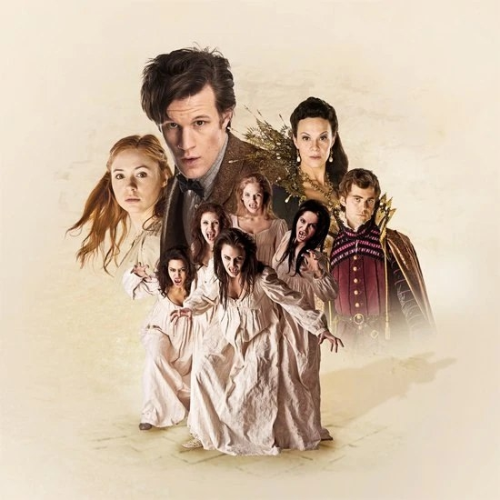
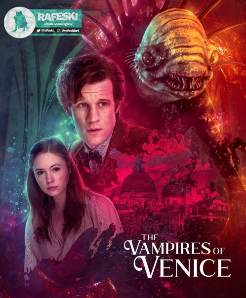

Эра Одиннадцатого Доктора (5 сезон)
<<< НАЗАД ||| 6. Вампиры Венеции ||| ДАЛЬШЕ >>>

+ Original [ENG]
Субтитры: Русские {TrueTransLate} + Английские
+ MVO [BeeFilm] | Весь 5-й сезон (13 серий) |
The Vampires of Venice
Дата выхода: 8 мая 2010
Формат: 50-минутный эпизод
| Варианты озвучек: | * Разные: смотрите по инструкции |
|---|---|
| Скачивание и просмотр: |
Лишенные крови тела, леденящий души страх… Доктор предлагает Эми и Рори отправиться в романтическое путешествие. Но в шестнадцадцатом столетии Венеция выглядит по-другому. Закрытый для защиты от чумы город наполнен зловещими существами. Каков план Розанны Кальвиерри?..




Трейлер: